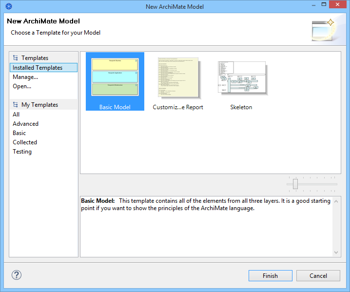

Creating a New Model from a Template
To create a new Model based on an existing template follow these steps:
- Choose the "File->New->Model From Template..." menu item from the main menu. A wizard will open:

- Choose the desired template. Some are provided in the "Installed Templates" section while user-created templates are listed in their categories in the "My Templates" section (see "Creating a New Template"). The selected template's name and description are displayed in the Gallery's preview window.
- You can preview all of the thumbnail images for a template by moving your mouse from side to side across the thumbnail image in the Gallery. You can also resize the images in the Gallery by using the resize slider control.
- If you wish to open a template from file that is not shown in the wizard select the "Open..." item. A file dialog will allow you to choose a "*.architemplate" template file.
- Press Finish. A new model is created and added to the Model Tree. The Model's name is prefixed with "(new)".